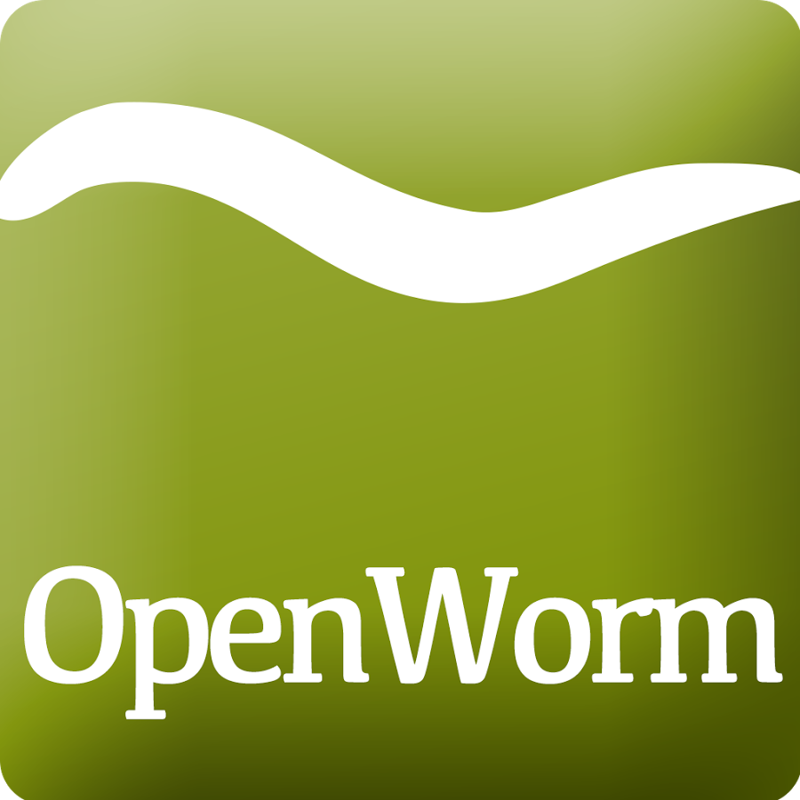

OpenWorm Community
This page contains information intended to help individuals understand what steps to take to make contributions to OpenWorm, how to join OpenWorm meetings, how to interact with the community online, and how to become an OpenWorm core member.
An Opening Note
Feeling lost? Not uncommon in open source projects. In fact, there are whole papers describing the kinds of problems you may be having and some proposed solutions. Help us make helping you easier by reaching out to us to ask for help.
Contribution Best Practices
What do I work on? We outline the work we are doing in the project using GitHub issues. Therefore, in order to figure out what to help out on, you need to be able to check them out for yourself. One way is to use this documentation to find a project you want to contribute to.
Find tasks to work on
Another way is you can browse the Project level view of issues directly.
Other key boards:
Come chat with us!
You can initiate a conversation with us on Slack channels to get more specific about issues. We ask that you just sign up as a contributor before receiving an invite to join our Slack channel first by filling out the form here. Once you are logged in, you will find channels such as:
Once you have identified an issue you want to work on from a particular project, please announce your intention to help out by commenting on the specific GitHub issue.
Using OpenWorm repos on GitHub
Making a contribution of code to the project will first involve forking one of our repositories, making changes, committing them, creating a pull request back to the original repo, and then updating the appropriate part of documentation.
An alternate way to contribute is to create a new GitHub repo yourself and begin tackling some issue directly there. We can then fork your repo back into the OpenWorm organization at a later point in order to bring other contributors along to help you.
More details on best practices using OpenWorm repos on GitHub are available on a separate page.
Creating organizing documents
Another great way to contribute is by organizing ideas or documentation or proposals via a Google doc, and then sharing the link on our Slack.
To contribute documentation and materials to the OpenWorm Google Drive, log into your Gmail account and click on this link.
All documents located in the OpenWorm folder is viewable to the public. Comments can be added to both text documents and spreadsheets. In order to edit existing documents or to add a new document, you will need to be added to the folder. You can request access by email your Google ID to info@openworm.org.
Taking notes as Google docs
It is very useful to create notes and progress reports as the result of meetings as Google docs. Docs should be shared publicly with view and comment access.
An effective progress report should contain the following information:
- Meeting title
- Attendees
- Date
- Goal being worked on (link back to doc page describing project)
- Previous accomplishments
- Recent progress towards goal
- Next Steps
- Future Steps
An example of an effective progress report is available online.
Once the document is shared, it should be announced on Slack.
Creating proposals as Google docs
To gather public comment on a direction for the project, it is often effective to create a proposal as a world-editable Google Doc. Once your document is created and shared, it should be announced on Slack.
An example of an effective proposal is available online.
Contributing to the OpenWorm documentation
The OpenWorm documentation is a searchable repository of knowledge we have assembled to help new users get oriented to the different areas of the project. When new contributions are made, it is important that they are incorporated into the appropriate part of the documentation. The GitHub repo for the OpenWorm documentation is here. An issues list for changes that we are working on to improve the documentation is here.
When they are ready to consume by the general public, simulation engines, visualization environments, and data sets should be added to the resources page.
Information about the goals, progress, and roadmap of current or proposed projects should be added to the projects page.
The docs use "GitHub-flavored" markdown format. This makes writing for GitHub (where most of our code is stored) and writing the documentation seamless. Markdown is also more forgiving in its syntax than, say, ReSTructured text, which was used previously.
The documentation is published using GitHub Pages, which helps it remain searchable and beautiful.
The markdown documentation is rendered using the Python module MkDocs, making theming and structuring much easier. The outline of the Table of Contents tree is structured in mkdocs.yml.
After issuing a pull request and merging to master, changes that appear in GitHub will automatically trigger a hook that will cause the documentation on GitHub Pages (and available at http://docs.openworm.org) to become rebuilt and pushed onto the site (using a GitHub Action).
Guest Blog Post
We love hearing about what members are of the OpenWorm community are doing. If you have something to share, contact us at info@openworm.org to discuss.
Journal Clubs
Every few months an academic journal article comes along we can't resist talking about. We host a journal club where we invite scientists to present on the paper and to host a discussion about it, hopefully with some of the article authors.
You can see past journal clubs we have conducted online.
If you have an idea for a good journal club, please contact us at info@openworm.org.
Coding Standards
It is recommended to follow the PEP8 Guidelines. For contributions of Python code to OpenWorm repositories. Compliance can be checked with the pep8 tool and autopep8.
Meetings
Working meetings
Contributors are encouraged to meet with each other on Slack on a regular basis to advance areas of the project they need interaction on.
Scheduling meetings
We like using the Doodle service for scheduling meetings. This makes it easy to find times to meet across various time zones. Once a meeting is scheduled, we will often create a Google Calendar event to track it and remind everyone it is occurring.
Interactions
Mailing Lists
There are two Google Groups in connection with OpenWorm.
This list was for general updates and announcements related to the project.
This list was for high-volume type technical discussions, day-to-day communications, and questions related to the OpenWorm project.
⚠ NOTE: Discussions have moved to Slack.
The mailing lists above have become quiet of late... Most of the in depth discussions in the project have moved to Slack.
Want to tag OpenWorm on a tweet? Use @openworm and share the love.
Blog
Our blog is hosted in Tumblr.
Interesting in being a guest on our blog? We love hearing about what members of the OpenWorm community are doing. If you have something to share, contact us at info@openworm.org to discuss.
YouTube
Our YouTube channel is currently quite out of date, but for historical purposes, you can view our YouTube channel here.
Want to get notified when new content goes live? Subscribe to the channel by clicking on the "subscribe" button while logged in to your Google account.
Playlists
- Status Updates - Frequent updates from the OpenWorm team.
- Journal Clubs - Like journal clubs that meet in person, the OpenWorm journal clubs use discuss new discoveries, tools and resources related to neuroscience, C. elegans, computational biology and open source science. Journal clubs are posted to social media in advance for any to watch and recordings then become available on YouTube. Learn more about our journal clubs.
- Data Team meetings - Learn more about our team meetings.
- Real C. elegans
- Building Blocks
Membership
More information about the membership policy is available on a separate page.
Use of OpenWorm logo
The OpenWorm logo font is Kefa.
This is the OpenWorm logo:

Click here for a vector version of the logo. All three layers are vector.
It may be adapted for subteams. Please follow these style rules when doing so:
- Don't apply effects (e.g. shadows) to the text; use flat style
- If any icon is added it should be flat looking and its colour should be #92bd1e
- Do not use detailed/real looking graphics
- Keep it simple
- Do not alter the OpenWorm logo itself
- Logo needs to be readable when rendered in grayscale
Such logos are subject to review by the core team to retain consistency across the project.